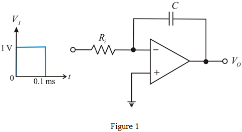
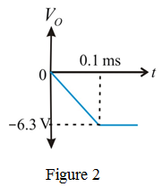

Gain of the miller integrator is unity.
The transfer function is,
Calculate the value of the capacitor from the equation.
Substitute 10 kHz for  and
and  for
for  in the equation.
in the equation.
Consider the following miller integrator circuit.

Gain of the miller integrator is unity.
The transfer function is,
Calculate the value of the capacitor from the equation.
Substitute 10 kHz for and for in the equation.
The feedback resister is introduced, then the gain of the integrator is,
Calculate the value of feedback resistor for long stability.
Substitute  for
for  in the equation.
in the equation.
Calculate the lower 3-dB frequency (corner frequency).
(a)
Calculate the output voltage for no dc stabilization.
No dc stabilization means there is no feedback resistor,  .
.
Therefore, the output voltage,  is .
is .

(b)
Calculate the output voltage with feedback resistor connected.
Therefore, the output voltage,  is .
is .
The sketch of the output voltage form is shown in Figure 3.